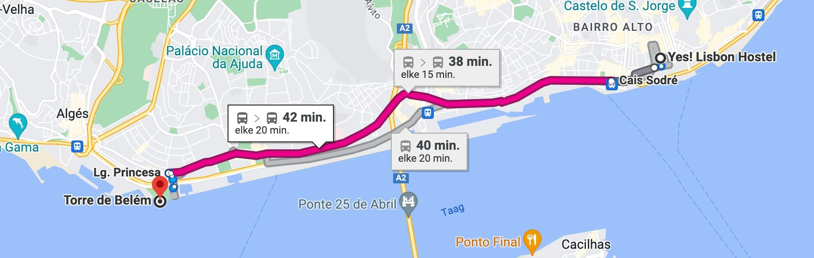
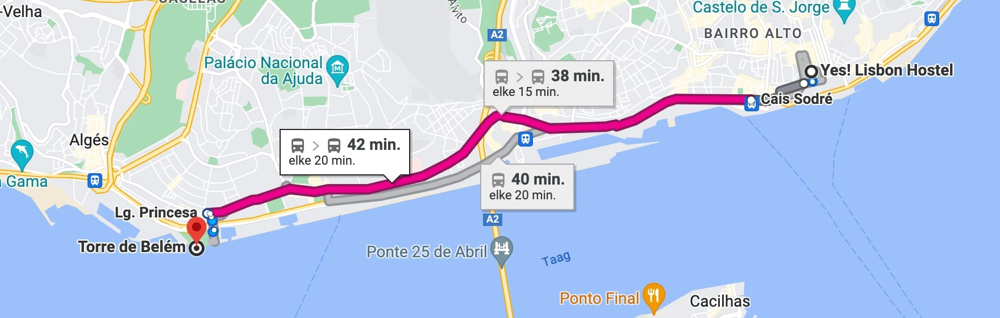
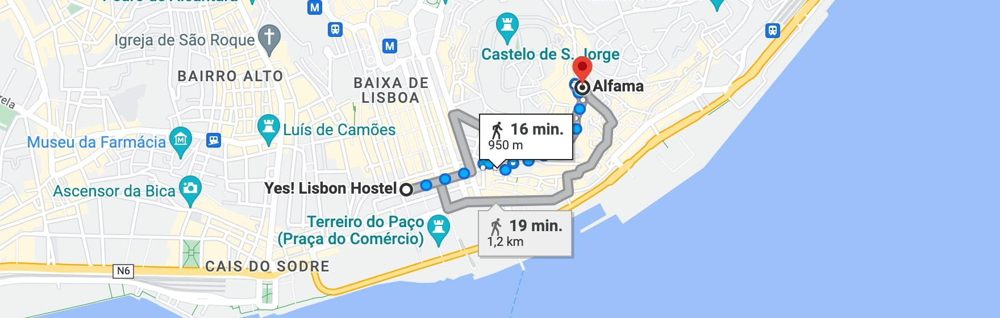
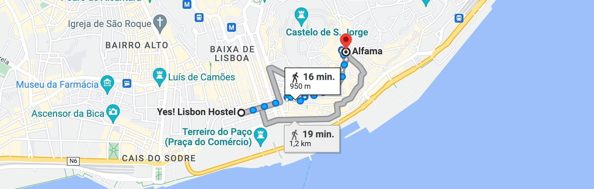

De waanzinnige bezichtigingen van Lissabon
Lissabon is een historische stad waar genoeg mooie bezichtigingen te vinden zijn, maar welke
bezichtigingen springen er nou echt uit in deze mooie stad?
Op deze pagina ga ik een aantal van mijn persoonlijke favorieten bespreken die je zeker gezien moet
hebben als je een tripje naar Lissabon boekt!
Ik geef van elke bezichtiging een duidelijke foto weer met
daarnaast de route vanaf mijn hostel tot de locatie van de bezichtiging.
Tijdens mijn tripje bleef ik slapen in een hostel genaamd "Yes! Hostel," gelegen in het centrum van Lissabon.
Torre de Belém
 

De Belem-toren, gelegen aan de oevers van de rivier de Taag, is een architecturaal
meesterwerk en een van de meest bekende bezienswaardigheden
van Lissabon. Dit prachtige fort uit de 16e eeuw is een perfect voorbeeld van de Manuelijnse stijl,
die typisch is voor de Portugese renaissance.
De toren staat op de UNESCO-werelderfgoedlijst en is een herinnering aan het tijdperk van
ontdekkingsreizen en de Gouden Eeuw van Portugal.
De Belem-toren diende vroeger als een defensieve vesting, een douanepost en een baken voor zeelieden
die de haven van Lissabon binnenvoeren.
Tegenwoordig is het een openluchtmuseum geopend voor het publiek.
Binnenin kun je de prachtige architectuur bewonderen en via een wenteltrap naar de top klimmen voor
prachtig uitzicht op de rivier
en de stad. De toren staat symbool voor de moedigheid van de Portugese ontdekkingsreizigers en is
een must-visit voor iedereen die de rijke geschiedenis
en schoonheid van Lissabon wilt ervaren.
De route vanaf het centrum (mijn hostel) tot Torre de Belém: circa 40 minuten met het
openbaar vervoer.
Alfama: Historische Wijk
 

Alfama, de oudste wijk van Lissabon, is een betoverend doolhof van smalle, kronkelende straatjes,
kleurrijke huizen met betegelde gevels
en prachtige balkons. Het lijkt rechtstreeks uit een sprookje te komen en neemt je mee op een reis door
de geschiedenis van de stad.
Een hoogtepunt van Alfama is het indrukwekkende São Jorge Kasteel, dat boven de wijk uittorent en een
panoramisch uitzicht biedt over Lissabon.
Binnen Alfama kun je ook de mooie sfeer van de Portugese cultuur ervaren door te luisteren naar
Fado-muziek in lokale bars.
Alfama is een plek waar je de tijd kunt vergeten en kunt genieten van de authentieke sfeer van Lissabon.
De route vanaf het centrum (mijn hostel) tot de Historische wijk Alfama: circa 15 tot 20
minuten wandelen.
Castelo de São Jorge

Het São Jorge Kasteel, hoog bovenop een heuvel, is een historisch icoon in Lissabon. Ik heb dit kasteel
al kort genoemd in bovenstaande tekst,
maar dit kasteel verdient haar eigen stukje tekst.
Het kasteel dateert uit de middeleeuwen en biedt een adembenemend uitzicht over de stad. Binnenin kun je
ronddwalen door oude muren en prachtige tuinen.
Het kasteel vertelt het verhaal van het verleden van Lissabon en is een geweldige plek om te verkennen
en te genieten van het uitzicht.
Dit was mijn persoonlijke favoriet, voor €7 entree kan je het prachtige kasteel bezoeken met naar mijn
mening het mooiste uitzicht
dat te vinden is in Lissabon. Het is een kleine klim naar boven maar het is het zeker waard!
Ik heb zonder overdrijven ruim een half uur gestaard naar het uitzicht omdat het zo mooi was.
De route vanaf het centrum (mijn hostel) tot Castelo de São Jorge Kasteel: circa 15
minuten wandelen.
LX Factory
LX Factory in Lissabon is een leuke culturele plek dat zich nestelt in voormalige industriële gebouwen
langs de oevers van de rivier de Taag.
Dit levendige centrum voor kunst, design, winkelen en dineren zit vol van creativiteit en innovatie.
Terwijl je door LX Factory wandelt,
zul je betoverende kunstgalerijen ontdekken met zowel lokale als internationale exposities, unieke
boetieks vol vintage
vondsten en winkels met oog voor design.
Er is een ruim aanbod aan eetgelegenheden, variërend van gezellige cafés tot chique restaurants.
LX Factory is niet alleen een bestemming voor kunst- en designliefhebbers, maar ook een gemeenschap waar
cultuur,
creativiteit en ambacht samenkomen. Een tripje naar LX Factory is een echte duik in de creatieve wereld
van Lissabon,
waar nieuwe ideeën en oude tradities perfect samenkomen.
De route vanaf het centrum (mijn hostel) tot LX Factory: circa 20 minuten met het
openbaar vervoer.